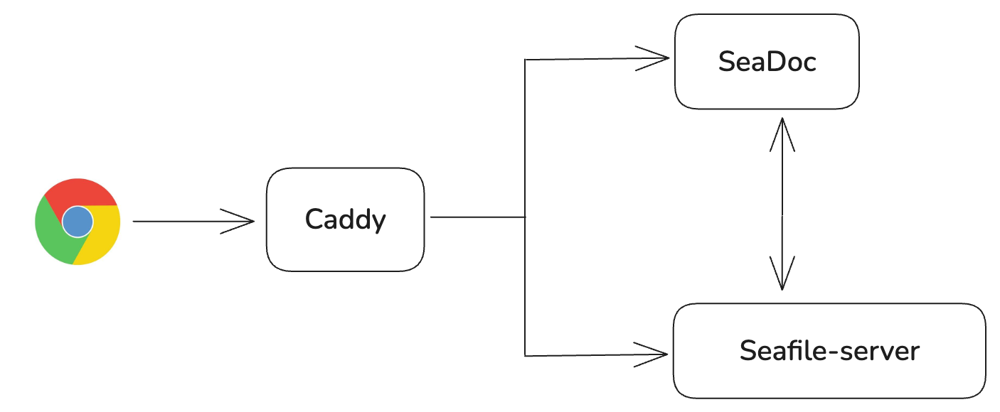

SeaDoc Integration¶
SeaDoc is an extension of Seafile that providing an online collaborative document editor.
SeaDoc designed around the following key ideas:
- An expressive easy to use editor
- A review and approval workflow to better control how contents changes
- Inter-document linking for connecting related contents
- AI integration that streamlines content generation, summarization, and management
- Comprehensive APIs for automating document generating and processing
SeaDoc excels at:
- Authoring product and technical documents
- Creating knowledge base articles and online manuals
- Building internal Wikis
Architecture¶
The SeaDoc archticture is demonstrated as below:

Here is the workflow when a user open sdoc file in browser
- When a user open a sdoc file in the browser, a file loading request will be sent to Nginx, and Nginx proxy the request to SeaDoc server.
- SeaDoc server will send the content back if it is already cached, otherwise it sends a request to Seahub.
- Seahub loads the content from seaf-server and sends it to SeaDoc server.
- After SeaDoc receives the content, it sends the content to the browser.
Setup SeaDoc¶
Seafile version 11.0 or later is required to work with SeaDoc.
Deployment method¶
SeaDoc has three deployment methods:
- Deploy SeaDoc on a new host.
- SeaDoc and Seafile are deployed on the same host.
- SeaDoc and Seafile docker are deployed on the same host.
Deploy SeaDoc on a new host¶
Download and modify SeaDoc docker-compose.yml¶
Download docker-compose.yml sample file to your host. Then modify the file according to your environment. The following fields are needed to be modified:
- MySQL host (DB_HOST)
- MySQL port (DB_PORT)
- MySQL user (DB_USER)
- MySQL password (DB_PASSWD)
- The volume directory of SeaDoc data (volumes)
- SeaDoc service URL (SDOC_SERVER_HOSTNAME)
- Seafile service URL (SEAHUB_SERVICE_URL)
Create the SeaDoc database manually¶
SeaDoc and Seafile share the MySQL service.
Create the database sdoc_db in Seafile MySQL and authorize the user.
create database if not exists sdoc_db charset utf8mb4;
GRANT ALL PRIVILEGES ON `sdoc_db`.* to `seafile`@`%.%.%.%`;
Note, SeaDoc will only create one database table to store operation logs.
Then follow the section: Start SeaDoc.
SeaDoc and Seafile (non docker version) are deployed on the same host¶
Download and modify SeaDoc docker-compose.yml¶
Download docker-compose.yml sample file to your host. Then modify the file according to your environment. The following fields are needed to be modified:
- MySQL host (DB_HOST)
- MySQL port (DB_PORT)
- MySQL user (DB_USER)
- MySQL password (DB_PASSWD)
- The volume directory of SeaDoc data (volumes)
- SeaDoc service URL (SDOC_SERVER_HOSTNAME)
- Seafile service URL (SEAHUB_SERVICE_URL)
The ports need to be modified additionally:
sdoc-server:
...
ports:
# - "80:80"
# - "443:443"
- "7070:7070"
- "8888:8888"
Create the SeaDoc database manually¶
SeaDoc and Seafile share the MySQL service.
Create the database sdoc_db in Seafile MySQL and authorize the user.
create database if not exists sdoc_db charset utf8mb4;
GRANT ALL PRIVILEGES ON `sdoc_db`.* to `seafile`@`%.%.%.%`;
Note, SeaDoc will only create one database table to store operation logs.
Modify seafile.nginx.conf¶
Add the following to the seafile.nginx.conf:
location /sdoc-server/ {
add_header Access-Control-Allow-Origin *;
add_header Access-Control-Allow-Methods GET,POST,PUT,DELETE,OPTIONS;
add_header Access-Control-Allow-Headers "deviceType,token, authorization, content-type";
if ($request_method = 'OPTIONS') {
add_header Access-Control-Allow-Origin *;
add_header Access-Control-Allow-Methods GET,POST,PUT,DELETE,OPTIONS;
add_header Access-Control-Allow-Headers "deviceType,token, authorization, content-type";
return 204;
}
proxy_pass http://127.0.0.1:7070/;
proxy_redirect off;
proxy_set_header Host $host;
proxy_set_header X-Real-IP $remote_addr;
proxy_set_header X-Forwarded-For $proxy_add_x_forwarded_for;
proxy_set_header X-Forwarded-Host $server_name;
proxy_set_header X-Forwarded-Proto $scheme;
client_max_body_size 100m;
}
location /socket.io {
proxy_pass http://127.0.0.1:7070;
proxy_http_version 1.1;
proxy_set_header Upgrade $http_upgrade;
proxy_set_header Connection 'upgrade';
proxy_redirect off;
proxy_buffers 8 32k;
proxy_buffer_size 64k;
proxy_set_header X-Real-IP $remote_addr;
proxy_set_header X-Forwarded-For $proxy_add_x_forwarded_for;
proxy_set_header Host $http_host;
proxy_set_header X-NginX-Proxy true;
}
And reload nginx
nginx -s reload
Then follow the section: Start SeaDoc.
SeaDoc and Seafile docker are deployed on the same host¶
Modify Seafile docker-compose.yml¶
Add the SeaDoc docker-compose.yml contents to the Seafile docker-compose.yml, and the ports need to be modified additionally:
services:
...
seafile:
...
sdoc-server:
image: seafileltd/sdoc-server:latest
container_name: sdoc-server
# ports:
# - 80:80
# - 443:443
# - 7070:7070
# - 8888:8888
networks:
- seafile-net
...
Create the SeaDoc database manually¶
SeaDoc and Seafile share the MySQL service.
Create the database sdoc_db in Seafile MySQL.
create database if not exists sdoc_db charset utf8mb4;
GRANT ALL PRIVILEGES ON `sdoc_db`.* to `seafile`@`%.%.%.%`;
Note, SeaDoc will only create one database table to store operation logs.
Modify seafile.nginx.conf¶
Add the following to the seafile.nginx.conf:
location /sdoc-server/ {
add_header Access-Control-Allow-Origin *;
add_header Access-Control-Allow-Methods GET,POST,PUT,DELETE,OPTIONS;
add_header Access-Control-Allow-Headers "deviceType,token, authorization, content-type";
if ($request_method = 'OPTIONS') {
add_header Access-Control-Allow-Origin *;
add_header Access-Control-Allow-Methods GET,POST,PUT,DELETE,OPTIONS;
add_header Access-Control-Allow-Headers "deviceType,token, authorization, content-type";
return 204;
}
proxy_pass http://sdoc-server:7070/;
proxy_redirect off;
proxy_set_header Host $host;
proxy_set_header X-Real-IP $remote_addr;
proxy_set_header X-Forwarded-For $proxy_add_x_forwarded_for;
proxy_set_header X-Forwarded-Host $server_name;
proxy_set_header X-Forwarded-Proto $scheme;
client_max_body_size 100m;
}
location /socket.io {
proxy_pass http://sdoc-server:7070;
proxy_http_version 1.1;
proxy_set_header Upgrade $http_upgrade;
proxy_set_header Connection 'upgrade';
proxy_redirect off;
proxy_buffers 8 32k;
proxy_buffer_size 64k;
proxy_set_header X-Real-IP $remote_addr;
proxy_set_header X-Forwarded-For $proxy_add_x_forwarded_for;
proxy_set_header Host $http_host;
proxy_set_header X-NginX-Proxy true;
}
And reload nginx
nginx -s reload
Then follow the section: Start SeaDoc.
Start SeaDoc¶
Start SeaDoc server with the following command
docker compose up -d
Wait for a few minutes for the first time initialization. Open /opt/seadoc-data/sdoc-server/conf/sdoc_server_config.json, and record private_key for modifying Seafile configuration file.
Configure Seafile¶
Modify seahub_settings.py:
ENABLE_SEADOC = True
SEADOC_PRIVATE_KEY = '***' # sdoc-server private_key
SEADOC_SERVER_URL = 'https://sdoc-server.example.com' # sdoc-server service url
# When SeaDoc and Seafile/Seafile docker are deployed on the same host, SEADOC_SERVER_URL should be 'https://seafile.example.com/sdoc-server'
FILE_CONVERTER_SERVER_URL = 'https://sdoc-server.example.com/seadoc-converter' # converter-server url
# When SeaDoc and Seafile are deployed on the same host, FILE_CONVERTER_SERVER_URL should be LAN address 'http://127.0.0.1:8888'
# When SeaDoc and Seafile docker are deployed on the same host, FILE_CONVERTER_SERVER_URL should be http://sdoc-server:8888
Restart Seafile server
./seahub.sh restart
Now you can use SeaDoc!
More configuration options¶
Let's encrypt SSL certificate¶
If you set SDOC_SERVER_LETSENCRYPT to true, the container would request a letsencrypt-signed SSL certificate for you automatically.
e.g.
sdoc-server:
...
ports:
- "80:80"
- "443:443"
...
environment:
...
- SDOC_SERVER_LETSENCRYPT=true
- SDOC_SERVER_HOSTNAME=sdoc-server.seafile.com
...
If you want to use your own SSL certificate and the volume directory of SeaDoc data is /opt/seadoc-data:
- create a folder
/opt/seadoc-data/ssl, and put your certificate and private key under the ssl directory. - Assume your site name is
sdoc-server.example.com, then your certificate must have the namesdoc-server.example.com.crt, and the private key must have the namesdoc-server.example.com.key.
SeaDoc directory structure¶
/opt/seadoc-data¶
Placeholder spot for shared volumes. You may elect to store certain persistent information outside of a container, in our case we keep various log files and upload directory outside. This allows you to rebuild containers easily without losing important information.
- /opt/seadoc-data/sdoc-server: This is the directory for SeaDoc server configuration and data.
- /opt/seadoc-data/nginx-logs: This is the directory for nginx logs.
- /opt/seadoc-data/ssl: This is directory for certificate, which does not exist by default.
Upgrading SeaDoc server¶
To upgrade to latest version of SeaDoc server:
docker pull seafileltd/sdoc-server:latest
docker compose down
docker compose up -d
FAQ¶
Load doc content error¶
If this error occurs, please check the logs of Nginx, SeaDoc, Seahub, and Seaf-server. You can refer to the following solutions for troubleshooting.
seafile.nginx.conf¶
Please check whether the configuration correctly proxy the /sdoc-server/ and /socket.io.
eg : IF you found GET /sdoc-server/... in seahub.access.log, it means that the request that should have been sent to SeaDoc was mistakenly sent to Seahub.
seahub_settings.py¶
The values of SEADOC_SERVER_URL and FILE_CONVERTER_SERVER_URL are different in different deployment methods.